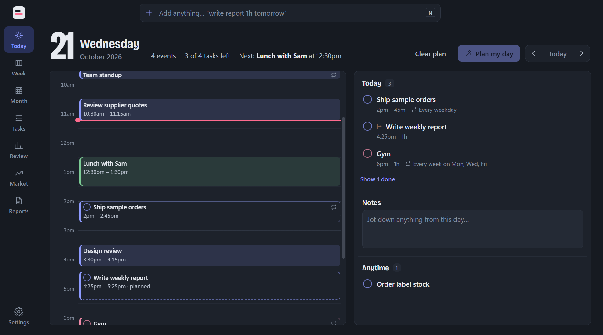

An all-in-one scheduling tool for employees.

Daybook now runs on Macs.
Version 1.3.5 LatestPage breaks in Reports: press Ctrl+Enter or click Page break between bullets, or point between parts in the preview to start a new page.
Version 1.3.4Charts and pictures in reports: paste a chart from Excel with Ctrl+V right between your bullets, add bar charts or pictures from the toolbar, and drag a corner to resize them.
Version 1.3.3Charts in Reports: add bar charts like sales by customer, paste the numbers straight from Excel, and next week's report keeps them.
Version 1.3.1New Style picker in Reports: choose Daybook, Modern, Corporate (with a 결재 sign-off box) or Minimal for your report's look.
Version 1.3.0Notification bell optimizations.
Version 1.2.9New bell next to the search bar shows what's still coming up today and over the next week.
Version 1.2.6Short tasks are centered in their boxes and no longer hide behind each other.
Version 1.2.5Week view: task circles now line up with their titles.
Version 1.2.4Korean language option in Settings. Checks for updates every hour.
Version 1.2.3Updates install without a stuck command window.
Version 1.2.2Shorter, clearer wording on the Market and Settings pages.
Version 1.2.1First version that updates itself.
Version 1.2.0